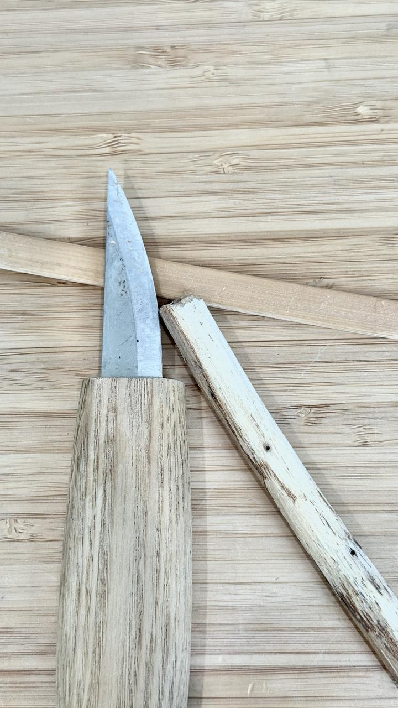
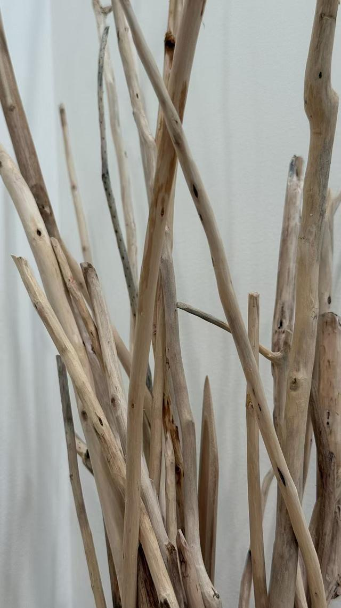
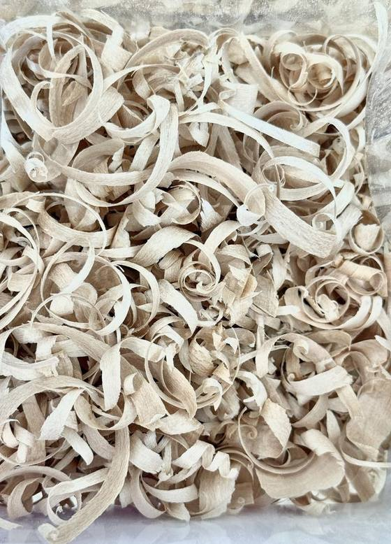
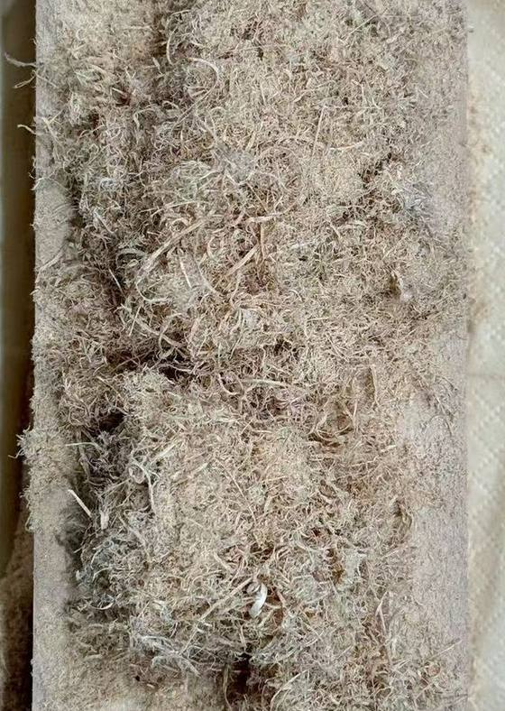
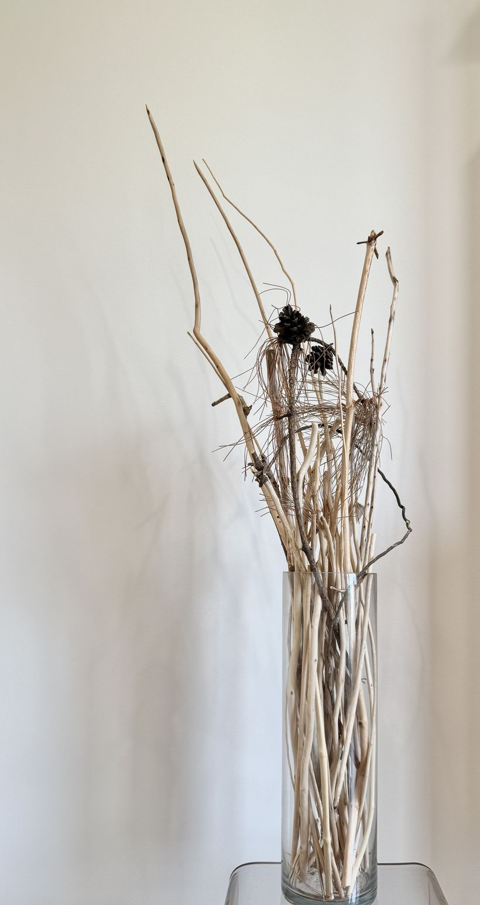

I like skinning sticks. This is the desk where it happens. Three layers, one knife, and whatever my head does in the meantime.
Three layers
BandiWhen you look closely, you can see that most sticks have multiple layers of skin. The outermost layer is usually the roughest and sometimes partially comes off when you wash and rub the stick. They usually have the most dirt in it and are relatively easy to remove, so I usually remove them first when I skin a stick. I can also be less careful when removing that layer since there's still a layer underneath.▼
BandiThen, there's the middle layer, which is smoother than the outermost layer, but rougher than the innermost layer. It would be the layer that's still green if you picked a fresh stick to skin. When you skin this layer, you have to be more careful, since if you're not careful, you might accidentally damage the inner layer, which you want to keep. Sometimes this layer gives off an aroma when freshly peeled. If it's a flower tree like a cherry tree, then it might smell like the flowers. For some sticks, this layer gets sticky when in contact with water. A stick from my Chinese elm tree would be an example of that.▼
BandiLastly, there's the innermost layer. I'm actually not very sure if this layer really classifies as skin, since unlike the other layers, it does not exactly have a clear distinction/separation from the center. Sometimes the other layers can be peeled off by hand if the conditions are right, but not this layer. Anyways, usually I like to keep this layer since it's shiny and pretty. Unfortunately, I don't always get it right and it sometimes ends up peeled in some parts, usually people cannot notice the difference very well though since it's quite similar to the center part. Some sticks also don't have this layer, though it could just be that I haven't noticed them in those sticks.

the whole kit
Different sticks

cherry, elm, and a few I can't name
BandiDifferent sticks have different textures. They vary in color, hardness, flexibility, roughness of the bark, and even their scent. By looking at the stick, it's possible to guess approximately what kind of tree it came from. For example, cherry tree sticks generally have a reddish brown skin and have a smoother bark, they also give off this aroma that smells like its flowers. Sticks from the elm tree I own has harder skin and drops some dust when skinned dry. They also smell different when cut.

what comes off a fresh stick

what comes off a dry one
How it started
BandiI first started this activity when one day, I found a cool stick on the ground. So I thought to myself, "ooh this stick looks cool, Imma bring it home", and I did. When I brought it home, it was a bit dirty, and parts of the skin kept falling off when I washed it, so I just decided to remove the skin entirely. It was quite fun, though I didn't think much of it at the time.▼
BandiA while later, I found another cool stick near our house and skinned it too. Then more cool sticks, and eventually it became a hobby. I think it's a nice hobby, you can find sticks almost anywhere and all it takes is a carving knife to skin them. It's also a nice way to connect to nature since you'd have to go outside to get the sticks, and to make art out of nature's creation.

where they end up
What happens in my head
BandiIt's quite relaxing. I like to do it sometimes when I need to take a break from my devices, or just whenever I feel like it. I think it's a bit meditative, I can just let my thoughts wander around and relax when I skin the sticks. When I skin the sticks, I enter a state where my brain only focuses on one thought at a time, and all outside distractions get ignored automatically. My emotions become dimmed, and my logic becomes rather simple, but clearer at the same time.▼
BandiA lot of my thoughts would be random ideas that pop up from time to time, some of which become "seeds" for a game idea or something else. Other thoughts also include reflections on my past actions and memories, or just random questions. Sometimes, I would be able to think of an answer to a question that I otherwise would've been unable to answer. Sometimes, truth lies in the simpler things we normally overlook.